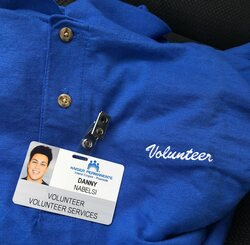
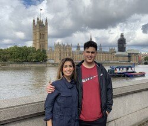

Danny Nabelsi
Born in Orange, California, I was raised in Orange County where I attended Villa Park High School before being accepted to and attending the University of California, Riverside. Since I was in elementary school, I’ve been fascinated by sports, science, and computers. I grew up wrecking the family computers playing various computer games infested with malware, messing with random bugs in the field behind my house with my neighbors, and playing basketball by myself, at any basketball court I could find.
My interest in science in general was fostered from the great teachers and courses I’ve encountered throughout my journey as a student, notably a physical science course from middle school and my high school Biology course, altered the way I viewed the world and science as a whole. As an adolescent, I found my science and math classes much more interesting than history and English. In my physical science course, we learned about the elements, took part in jaw-dropping experiments (to a middle school student), and raced our own miniature cars as part of a quarter-long project. In high school biology, I learned practical knowledge and how to take a proper college course, as my teacher was adamant on preparing students for college and further expenditures.
Now in college, I mainly concentrate my efforts towards my education and its enrichment through various extracurricular activities and research. I’ve taken part in the Dynamic Genome program at UCR, worked with Kaiser Permanente Riverside at the Pharmaceutical clinic, and been part of UCR Flying Samaritans. In the Dynamic Genome program, I was introduced to the biological methods that I had only learned about in my high school biology textbooks. We did something that was extraordinary to me. Each of us used a sample from a leaf of a plant to extract the DNA straight from the fleshy plant material. Extracting the DNA and confirming our results was one of the focal points of my understanding of biology and how my textbook translates into real life. Secondly, I’ve volunteered in a professional clinical setting at Kaiser Permanente Riverside, where prescriptions are filled and distributed to patients in their hospital rooms, or who retrieve them from the clinic. I have the duty of distributing prescriptions to patients’ rooms and filling orders. From this experience I’ve mainly learned about general healthcare and way too much information about drugs that I’ll probably never encounter for the rest of my life. Lastly, as part of Flying Samaritans, I’ve found a direct way to bring help and care to my community in Riverside as well as the impoverished communities across the border in Mexico. As part of this club, we take part in community service here in Riverside as well as clinics just south of the California-Mexico border where we provide care for impoverished communities. These experiences have left a profound mark on my life and my quest of higher education. Experiences and lessons that I’ve learned over the years that mold who I am today.
Experience
Volunteer
• Shadowed medical doctors at clinic
• Attended and took part in triage clinic
• Volunteered with less fortunate communities
Volunteer
• Responsible filling prescription orders
• Delivered prescriptions to patients rooms
Research Assistant
• Did DNA analysis under Dr. Nagel
• Used methods such as PCR and gel electrophoresis
• Presented research in front of the board of research
Education
UC Riverside
Villa Park High School
Portfolio

